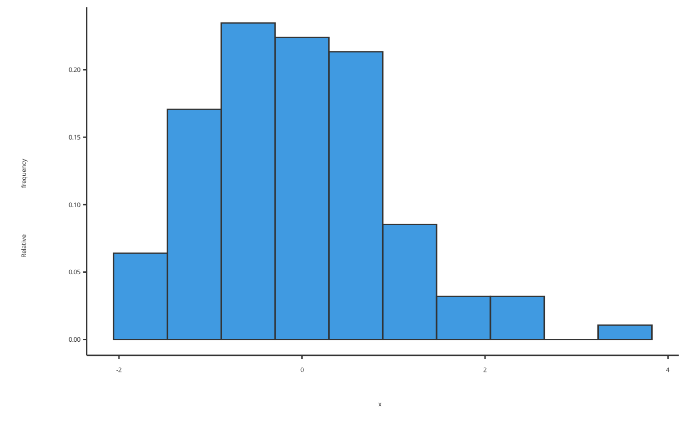
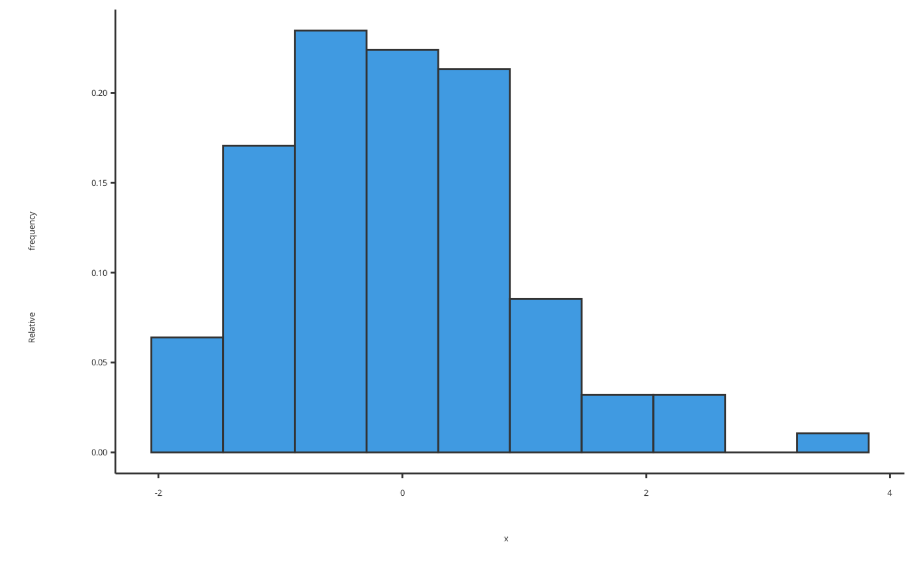
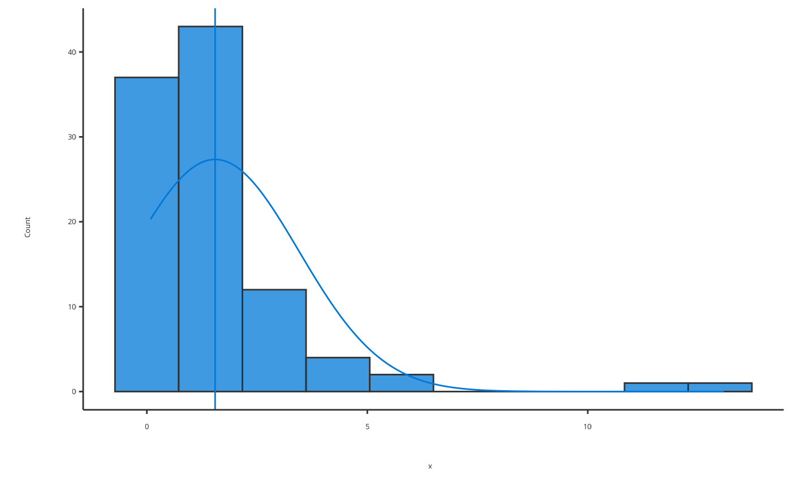
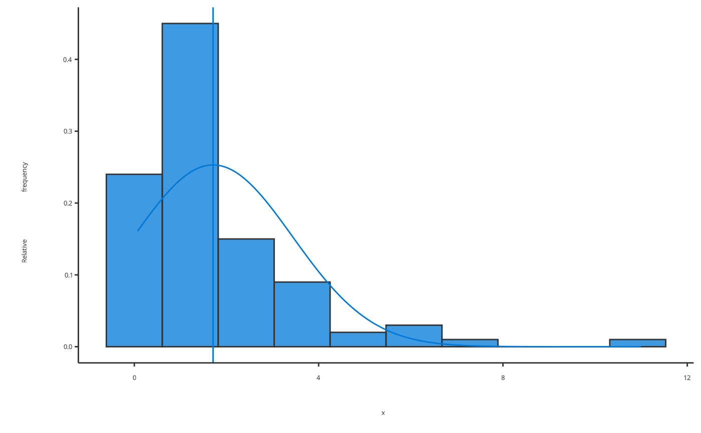
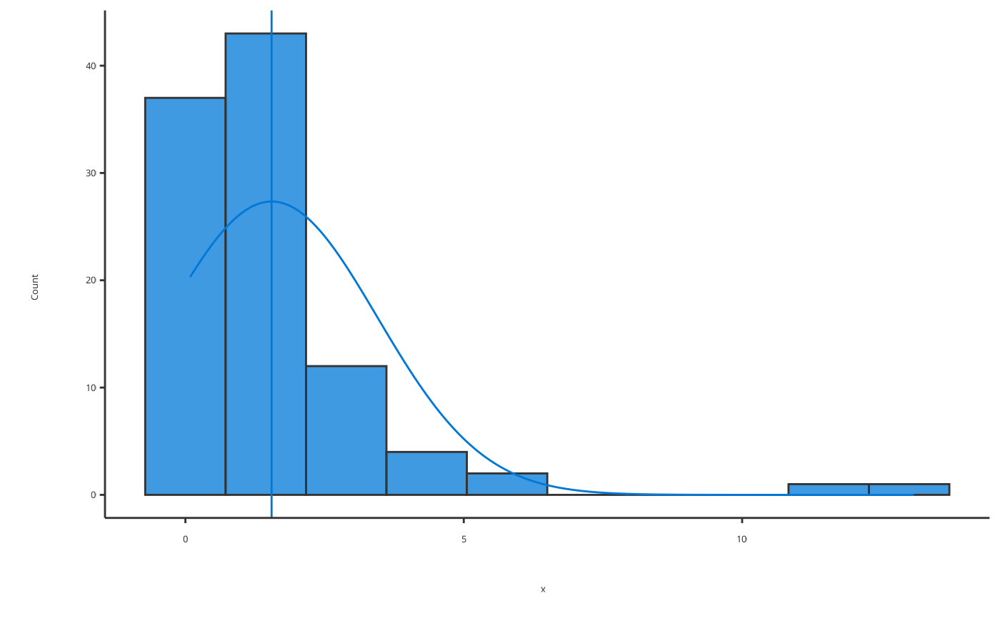
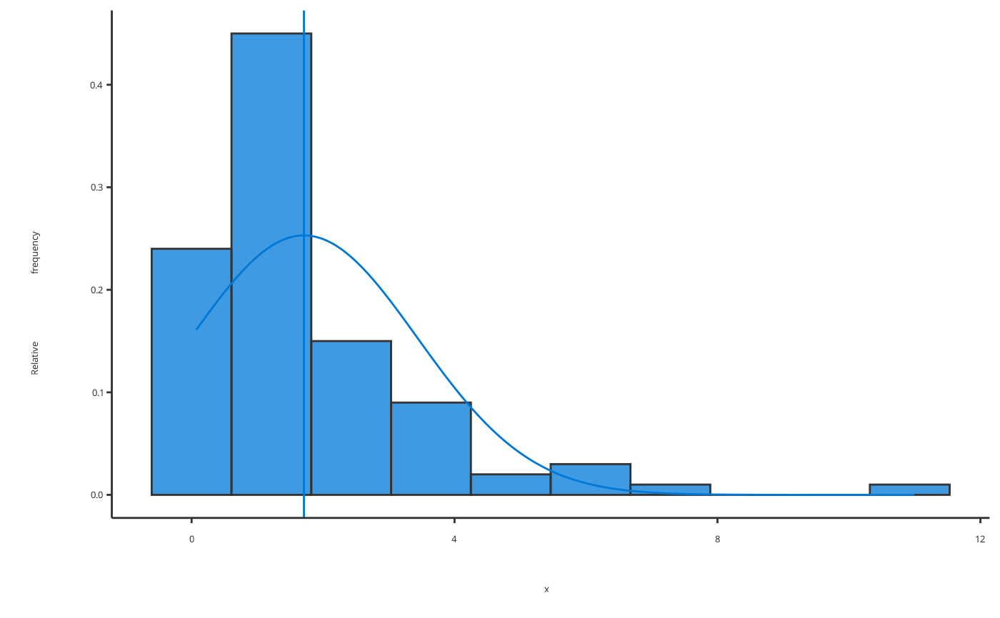

Producing Histograms
Usage
plotHistogram(
data = NULL,
metaData = NULL,
x = NULL,
dataMapping = NULL,
frequency = NULL,
bins = NULL,
binwidth = NULL,
stack = NULL,
distribution = NULL,
plotConfiguration = NULL,
plotObject = NULL
)Arguments
- data
A data.frame to use for plot.
- metaData
A named list of information about
datasuch as thedimensionandunitof its variables.- x
Numeric values to plot along the
xaxis. Only used instead ofdataifdataisNULL.- dataMapping
A
HistogramDataMappingobject mappingxand aesthetic groups to their variable names ofdata.- frequency
logical defining if histogram displays a frequency in y axis
- bins
Number or edges of bins. If
binsis provided as a single numeric values,bincorresponds to number of bins. The bin edges are then equally spaced within the range of data. Ifbinsis provided as an array of numeric values,bincorresponds to their edges. Default value,bins=NULL, uses the value defined bydataMapping- binwidth
Numerical value of defining the width of each bin. If defined,
binwidthcan overwritebinsifbinswas not provided or simply provided as a single value. Default value,binwidth=NULL, uses the value defined bydataMapping- stack
Logical defining for multiple histograms if their bars are stacked Default value,
stack=NULL, uses the value defined bydataMapping- distribution
Name of distribution to fit to the data. Only 2 distributions are currently available:
"normal"and"logNormal"Usedistribution="none"to prevent fit of distribution Default value,distribution=NULL, uses the value defined bydataMapping- plotConfiguration
An optional
HistogramPlotConfigurationobject defining labels, grid, background and watermark.- plotObject
An optional
ggplotobject on which to add the plot layer
References
For examples, see: https://www.open-systems-pharmacology.org/TLF-Library/articles/histogram.html
See also
Other molecule plots:
plotBoxWhisker(),
plotCumulativeTimeProfile(),
plotDDIRatio(),
plotGrid(),
plotObsVsPred(),
plotObservedTimeProfile(),
plotPKRatio(),
plotPieChart(),
plotQQ(),
plotResVsPred(),
plotResVsTime(),
plotSimulatedTimeProfile(),
plotTimeProfile(),
plotTornado()
Examples
# Produce histogram of normally distributed data
plotHistogram(x = rnorm(100))
 # Produce histogram of normally distributed data normalized in y axis
plotHistogram(x = rnorm(100), frequency = TRUE)

# Produce histogram of normally distributed data with many bins
plotHistogram(x = rlnorm(100), bins = 21)
# Produce histogram of normally distributed data normalized in y axis
plotHistogram(x = rnorm(100), frequency = TRUE)

# Produce histogram of normally distributed data with many bins
plotHistogram(x = rlnorm(100), bins = 21)
 # Produce histogram of fitted normally distributed data
plotHistogram(x = rlnorm(100), distribution = "normal")

# Produce histogram of fitted normally distributed data
plotHistogram(x = rlnorm(100), distribution = "normal", frequency = TRUE, stack = TRUE)

# Produce histogram of fitted normally distributed data
plotHistogram(x = rlnorm(100), distribution = "normal")

# Produce histogram of fitted normally distributed data
plotHistogram(x = rlnorm(100), distribution = "normal", frequency = TRUE, stack = TRUE)
